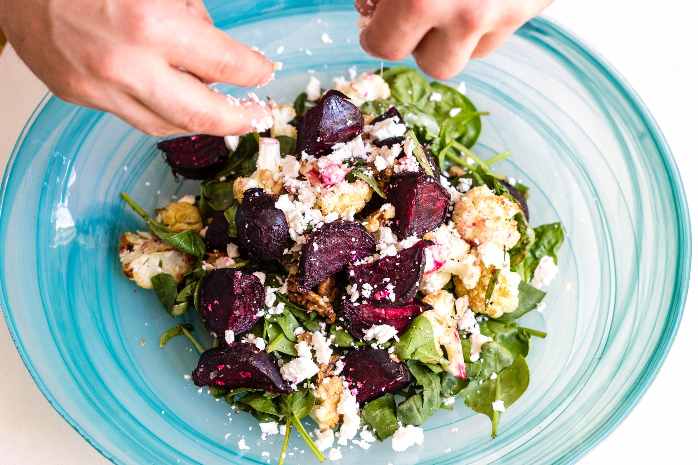
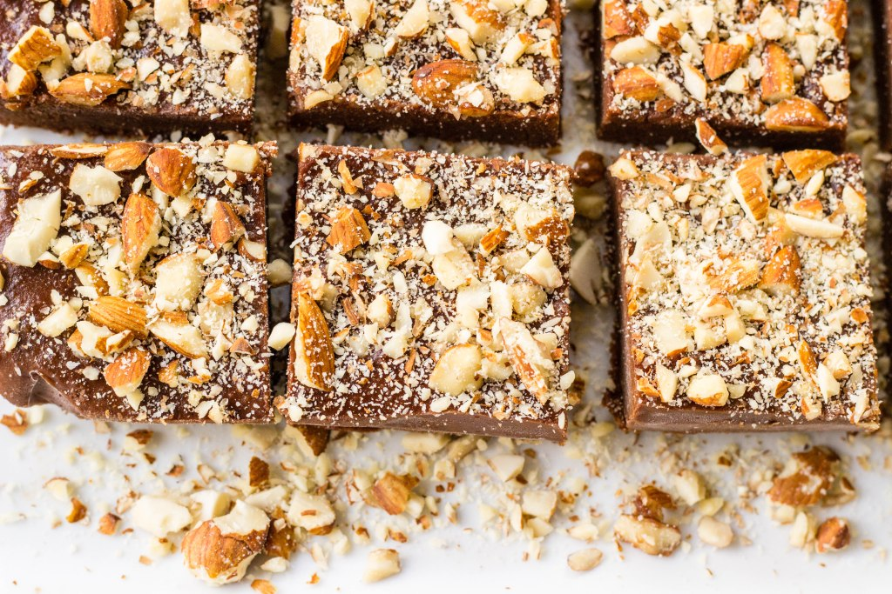

<!-- - - - featured posts - - - -->

<section>
  <h3>featured posts</h3>

  <!-- full width -->
    <div class="container">
      <a href="/posts">
        <div class="bottom-left"><h2>post title</h2></div></a>
    </div>


  <!-- half width -->
  <div class="grid">
    <div class="col-6 container">
      <a href="/posts">
        <div class="bottom-left"><h2>post title</h2></div></a>
    </div>
    <div class="col-6 container">
      <a href="http://google.com">
        <div class="bottom-left"><h2>post title</h2></div></a>
    </div>
  </div>

</section>

  <!-- - - - Explore More - - - -->
<section>
  <h3>explore more</h3>

  <div class="grid-middle-center explore">
    <div class="col-4 explore-recipes">
      <h2>recipes</h2>
    </div>

    <div class="col-4 explore-travel">
      <h2>travel</h2>
    </div>

    <div class="col-4 explore-favourites">
      <h2>frankie's
        <br>favourites</h2>
    </div>
</section>
